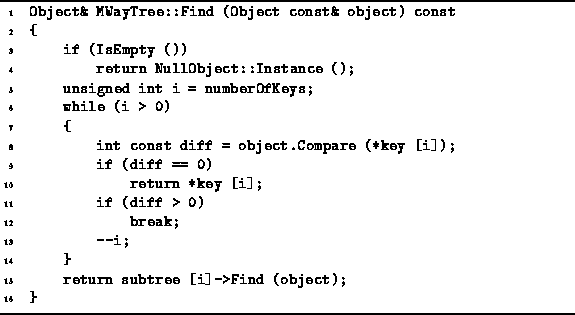

Data Structures and Algorithms
with Object-Oriented Design Patterns in C++
Data Structures and Algorithms
with Object-Oriented Design Patterns in C++
Program  gives the naıve version
of the Find member function of the MWayTree class.
The Find member function takes
a const reference to an Object instance
and locates the item in the search tree which matches the given instance.
gives the naıve version
of the Find member function of the MWayTree class.
The Find member function takes
a const reference to an Object instance
and locates the item in the search tree which matches the given instance.

Program: MWayTree Class Find Member Function Definition(Linear Search)
Consider the execution of the Find function for a node T
of a an M-way search tree.
Suppose the object of the search is x.
Clearly, the search fails when  (lines 3-4).
In this case, a reference to the NullObject instance is returned.
Suppose
(lines 3-4).
In this case, a reference to the NullObject instance is returned.
Suppose  .
The linear search on lines 5-14 considers the keys
.
The linear search on lines 5-14 considers the keys
 ,
,  ,
,  , ...,
, ...,  , in that order.
If a match is found,
a reference to the matching object is returned immediately (lines 9-10).
, in that order.
If a match is found,
a reference to the matching object is returned immediately (lines 9-10).
Otherwise, when the main loop terminates there are three possibilities:
i=0 and  ;
;
 and
and  ; or
i=n-1 and
; or
i=n-1 and  .
In all three cases,
the appropriate subtree in which to continue search is
.
In all three cases,
the appropriate subtree in which to continue search is  (line 15).
(line 15).
Clearly the running time of Program
is determined by the main loop.
In the worst case, the loop is executed M-1 times.
Therefore, at each node in the search path
at most M-1 object comparisons are done.
Consider an unsuccessful search in an M-way search tree. The running time of the Find function is
in the worst case,
where h is the height of the tree
and  is the time required to compare two objects.
Clearly, the time for a successful search has the same asymptotic bound.
If the tree is balanced and
is the time required to compare two objects.
Clearly, the time for a successful search has the same asymptotic bound.
If the tree is balanced and  ,
then the running time of Program
is
,
then the running time of Program
is  ,
where K is the number of keys in the tree.
,
where K is the number of keys in the tree.
 Copyright © 1997 by Bruno R. Preiss, P.Eng. All rights reserved.
Copyright © 1997 by Bruno R. Preiss, P.Eng. All rights reserved.